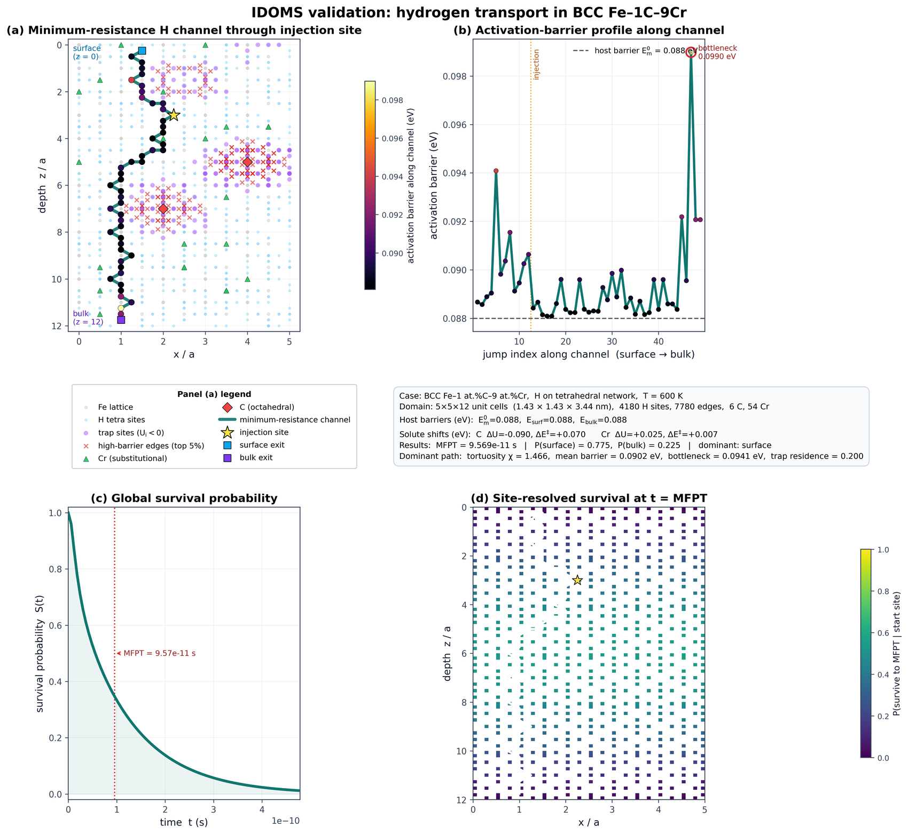

IDOMS
Interstitial Diffusion on Microscopic Scale
Department of Metallurgical and Materials Engineering,
National Institute of Technology Tiruchirappalli.
Tamil Nadu, India.
Scope
IDOMS is a pathway-resolved modelling tool for interstitial diffusion in crystalline materials. It treats crystallographic interstitial sites as internal voids and the allowed jumps between them as connected transport pathways, thereby extending percolation theory to include crystallography and local energetics. In this energy-weighted percolation framework, the motion of an interstitial species is governed by site energies, saddle-point barriers, trapping regions, and absorbing boundaries.
The approach enables quantitative tracking of how alloying elements, strain fields, defects, grain boundaries, interfaces, and surfaces reshape the diffusion landscape of an interstitial atom. The present version is a proof-of-concept implementation focused on alloying effects in ternary crystalline systems. It calculates pathway-level quantities such as mean first-passage time, surface-return probability, bulk-transmission probability, survival probability, dominant transport channel, bottleneck barrier, and trap-residence fraction.
The default worked example models hydrogen diffusion in BCC Fe–C–Cr. The baseline hydrogen migration barrier in BCC Fe is taken as 0.088 eV from the first-principles work of Jiang and Carter [1]. The hydrogen–carbon attractive site-energy shift is taken as approximately 0.09 eV from first-principles hydrogen-trap energetics in α-Fe [2]. Chromium is included as a substitutional alloying element in the Fe–Cr lattice field; in the minimal-input demonstration, direct H–Cr trapping is treated conservatively as weak/repulsive rather than strongly attractive, consistent with first-principles Fe–Cr hydrogen-transport studies [3]. The local C-associated saddle penalty is used as a transparent model input to represent barrier distortion near carbon-rich environments and can be edited by the user.
- D. E. Jiang and E. A. Carter, Diffusion of interstitial hydrogen into and through BCC Fe from first principles, Physical Review B, 70, 064102, 2004.
- W. A. Counts, C. Wolverton and R. Gibala, First-principles energetics of hydrogen traps in α-Fe: Point defects, Acta Materialia, 58, 4730–4741, 2010.
- A. J. Samin, D. A. Andersson, E. F. Holby and B. P. Uberuaga, First-principles localized cluster expansion study of the kinetics of hydrogen diffusion in homogeneous and heterogeneous Fe–Cr alloys, Physical Review B, 99, 014110, 2019.
1. Alloy composition
Enter up to two alloying elements in atomic percent. Host at.% is calculated automatically.
| Alloying element | at.% |
|---|
2. Crystal, interstitial and boundary setup
3. Required user-supplied energy values
Vital-energy mode. All energies are in eV. You supply one baseline migration barrier plus, for each alloying element, a site-energy shift ΔU and a saddle-energy shift ΔE‡. Negative ΔU means the interstitial is stabilised/trapped near that solute; positive ΔE‡ means the solute raises the local jump barrier. Host site energy is fixed at 0, and surface/bulk exit barriers default to the host migration barrier (no separate inputs required in this version). Defaults are pre-filled with the validation-example values.
4. Run simulation
5. Quantitative outputs
6. Lattice-aware minimum-resistance channel
Continuous surface ↔ injection ↔ bulk channel through a thin lattice y-slice, coloured by local activation barrier.
7. Activation-barrier profile along the channel
Per-jump activation barrier from the surface exit to the bulk exit, with the bottleneck and the injection point marked.
8. Global survival probability
Fraction of the injected population still resident versus time, with the mean first-passage time marked.
9. Site-resolved survival map at t = MFPT
Per-site probability of surviving to the mean first-passage time, projected onto the depth plane.
Export
Worked-Out Example
Hydrogen transport in BCC Fe–1 at.% C–9 at.% Cr at 600 K
Overview
This worked example demonstrates how IDOMS converts literature-based energetic inputs into a pathway-resolved description of interstitial hydrogen transport. The model system is a BCC Fe–1 at.% C–9 at.% Cr alloy, with hydrogen diffusing on the tetrahedral interstitial network at T = 600 K. Carbon is treated as an octahedral interstitial solute that introduces an attractive hydrogen site-energy shift and a local saddle-barrier penalty. Chromium is included as a substitutional alloying element and is treated as a weak repulsive/modifying solute rather than a strong hydrogen trap.
The default energetic inputs are chosen from first-principles and kinetic-transport literature. The baseline hydrogen migration barrier in BCC Fe is set to Em0 = 0.088 eV following Jiang and Carter. The carbon-associated hydrogen trapping/site-energy scale is taken as ΔUC ≈ −0.09 eV, based on first-principles hydrogen-trap energetics in α-Fe. Chromium-associated hydrogen transport modification is represented conservatively as a weak site-energy/saddle-energy perturbation, consistent with first-principles Fe–Cr hydrogen-transport studies. The C-associated saddle shift is a transparent local-barrier input representing distortion of the hydrogen jump landscape near carbon-rich environments; this value is editable by the user.
The purpose is not to claim a universal Fe–C–Cr parameter set, but to show how a small number of physically meaningful energy inputs can be transformed into quantitative pathway metrics.
Input values
System & domain
| Host element | Fe (BCC) |
| Lattice parameter, a | 2.866 Å |
| Alloying elements | C 1.0 at.%, Cr 9.0 at.% |
| Host content | 90.0 at.% |
| Interstitial species | H (tetrahedral network) |
| Temperature | 600 K |
| Requested slab thickness | 3.4 nm |
| Domain | 5 × 5 × 12 unit cells |
| Physical size | 1.433 × 1.433 × 3.439 nm |
| Boundary problem | Surface return vs bulk transmission |
Energy inputs (eV)
| Host migration barrier, Em0 | 0.088 |
| Surface-exit barrier | 0.088 (= Em0) |
| Bulk-exit barrier | 0.088 (= Em0) |
| ΔUC (site shift) | −0.090 |
| ΔE‡C (saddle shift) | +0.070 |
| ΔUCr (site shift) | +0.025 |
| ΔE‡Cr (saddle shift) | +0.007 |
Quantitative numerical results
Network and configuration
| Fe lattice sites | 600 | H tetrahedral sites | 4180 |
| H–H jump edges | 7780 | C on octahedral sites | 6 |
| Cr substitutional sites | 54 | Dominant absorbing boundary | Surface |
| Transport channel length | 49 jumps | Channel z-span | 11.5 cells |
Consolidated visual results

Description of the plots
Panel (a): Minimum-resistance H channel through the injection site.
This panel shows the crystallographic transport channel extracted from the energy-weighted interstitial graph. Grey points represent projected Fe lattice sites, light-blue points represent tetrahedral H sites, red diamonds mark octahedral carbon sites, and green triangles mark substitutional chromium atoms. Purple points indicate low-site-energy trap regions, while red crosses indicate the strongest high-barrier edge midpoints. The thick green path is the minimum-resistance hydrogen transport channel passing through the injection point. The star marks the injection site, and square markers indicate the surface and bulk absorbing boundaries. The zigzag shape is expected because hydrogen moves by discrete tetrahedral-site jumps rather than by a continuous straight-line trajectory.
Panel (b): Activation-barrier profile along the channel.
This panel plots the local activation barrier for each jump along the extracted channel. The dashed horizontal line gives the baseline host migration barrier Em0 = 0.088 eV. Peaks above this line correspond to alloy-modified bottleneck regions, especially near carbon-associated saddle perturbations. The highest peak is identified as the bottleneck barrier, which controls the most difficult jump along the channel.
Panel (c): Global survival probability.
This panel shows the probability S(t) that hydrogen remains inside the simulation domain without being absorbed at either the surface or bulk boundary. The vertical dotted line marks the mean first-passage time. A faster decay of S(t) indicates faster escape from the domain, while a slower decay indicates longer retention.
Panel (d): Site-resolved survival probability at t = MFPT.
This map shows the probability that hydrogen starting from a given interstitial site survives until the mean first-passage time. Regions with high survival probability correspond to locally retaining environments, while low-survival regions are more strongly connected to absorbing boundaries. This plot complements the single transport channel by showing the spatial distribution of retention across the interstitial network.
Theoretical Formulation
Energy-weighted transport on a crystallographic interstitial network
IDOMS models interstitial diffusion as an energy-weighted transport problem on a crystallographic network. Instead of treating diffusion only through an effective diffusivity, the tool explicitly constructs the set of interstitial sites available to the diffusing species and the possible jumps between neighbouring sites. The central idea is that an interstitial atom does not move through a continuous empty space, but through a discrete network of crystallographic voids connected by saddle regions. Alloying elements modify this network by changing the local site energies and jump barriers.
1. Crystal-to-network representation
For a selected crystal structure, such as BCC or FCC, the tool first constructs the host lattice and the corresponding interstitial-site network. The host atoms define the excluded-volume skeleton, while tetrahedral and/or octahedral interstitial sites define the accessible voids for the diffusing species. The interstitial network is represented as a graph,
$$ G = (V, E), $$
where \(V\) is the set of interstitial sites and \(E\) is the set of allowed jumps between neighbouring interstitial sites. Each node \(i \in V\) represents a possible position of the diffusing atom, and each edge \(i \rightarrow j\) represents a crystallographically allowed jump from site \(i\) to site \(j\). The domain size is defined in unit cells, \(N_x \times N_y \times N_z\), which is unitless. The corresponding physical dimensions are
$$ L_x = N_x\, a, \qquad L_y = N_y\, a, \qquad L_z = N_z\, a, $$
where \(a\) is the lattice parameter. The tool chooses a domain large enough to represent the entered alloy composition while maintaining a computationally efficient graph size.
2. Alloy composition and local energetic field
Once the host and alloy composition are specified, alloying atoms are placed on the host lattice sites according to the prescribed atomic percent. In the proof-of-concept version, the alloy configuration is generated as a stochastic substitutional distribution unless otherwise specified. IDOMS separates two physically distinct energetic effects. The first is the site energy \(U_i\), which represents the relative energy of the diffusing species when it occupies interstitial site \(i\). A lower value of \(U_i\) corresponds to an attractive or trapping environment. The second is the saddle energy \(E_{ij}^{\ddagger}\), the energy of the transition state between sites \(i\) and \(j\). Alloying elements can raise or lower this saddle energy, thereby changing the difficulty of a jump. The activation barrier for a jump from \(i\) to \(j\) is then
$$ E_{i\rightarrow j}^{\mathrm{act}} = E_{ij}^{\ddagger} - U_i. $$
This distinction is important: a trap is not only a low-energy site; it may also be difficult to escape from, because the activation barrier out of that site depends on the difference between the saddle energy and the site energy. In the minimal quantitative mode, the user supplies the essential energy inputs in eV — typically the host migration barrier, surface-exit barrier, bulk-exit barrier, and the most important solute-associated site and saddle perturbations. The tool does not estimate these values in the proof-of-concept version; it only uses the user-provided values.
3. Jump rates from activation barriers
Each allowed jump is assigned an Arrhenius transition rate,
$$ k_{ij} = \nu_0\, \exp\!\left( -\frac{E_{i\rightarrow j}^{\mathrm{act}}}{k_B T} \right), $$
where \(\nu_0\) is the attempt frequency, \(k_B\) is the Boltzmann constant, and \(T\) is the absolute temperature. A low-barrier connection becomes a fast pathway, while a high-barrier connection becomes a bottleneck. The result is an energy-weighted interstitial network in which both crystallographic connectivity and local alloy energetics determine the preferred transport route.
4. Absorbing boundaries: surface return and bulk transmission
To quantify whether the interstitial atom remains in the material, returns to the surface, or transmits into the bulk, IDOMS uses absorbing boundaries. A surface boundary represents return, escape, or recombination at the entry side; a bulk boundary represents through-thickness transmission or onward penetration. For a site \(i\) close to the surface, the tool assigns a surface absorption rate,
$$ k_i^{\mathrm{surf}} = \nu_0\, \exp\!\left( -\frac{E_{\mathrm{surf}} - U_i}{k_B T} \right). $$
Similarly, for a site \(i\) close to the bulk boundary, the bulk absorption rate is
$$ k_i^{\mathrm{bulk}} = \nu_0\, \exp\!\left( -\frac{E_{\mathrm{bulk}} - U_i}{k_B T} \right). $$
These boundary rates allow the tool to distinguish between surface return and bulk transmission.
5. Master equation formulation
The probability \(p_i(t)\) that the interstitial atom occupies site \(i\) at time \(t\) evolves according to a continuous-time master equation,
$$ \frac{dp_i}{dt} = \sum_{j} k_{ji}\, p_j - p_i\!\left( \sum_j k_{ij} + k_i^{\mathrm{surf}} + k_i^{\mathrm{bulk}} \right). $$
In matrix form, this can be written as
$$ \frac{d\mathbf{p}}{dt} = Q\,\mathbf{p}, $$
where \(Q\) is the transient generator matrix containing all jump rates and absorbing losses. This formulation is the quantitative core of the tool. It is not a purely geometric percolation model; it is an energy-weighted, crystallographically constrained transport model in which the survival, escape, and transmission probabilities follow from the rate network.
6. Mean first-passage time
The mean first-passage time is the expected time taken for the interstitial atom to be absorbed at either boundary. For each starting site \(i\), the mean first-passage time \(t_i\) satisfies
$$ \left( \sum_j k_{ij} + k_i^{\mathrm{surf}} + k_i^{\mathrm{bulk}} \right) t_i - \sum_j k_{ij}\, t_j = 1. $$
The tool solves this linear system over the interstitial network. For an initial injection distribution \(w_i\), the reported mean first-passage time is
$$ \langle t_{\mathrm{FP}} \rangle = \sum_i w_i\, t_i. $$
A larger value indicates that the alloyed energy landscape retains the interstitial species for a longer time before absorption.
7. Surface-return and bulk-transmission probabilities
The probability that a particle starting at site \(i\) is eventually absorbed at the surface, before reaching the bulk boundary, is denoted \(q_i^{\mathrm{surf}}\). It satisfies
$$ \left( \sum_j k_{ij} + k_i^{\mathrm{surf}} + k_i^{\mathrm{bulk}} \right) q_i^{\mathrm{surf}} - \sum_j k_{ij}\, q_j^{\mathrm{surf}} = k_i^{\mathrm{surf}}. $$
The corresponding bulk-transmission probability is \(q_i^{\mathrm{bulk}} = 1 - q_i^{\mathrm{surf}}\). For the initial injection distribution,
$$ P_{\mathrm{surface}} = \sum_i w_i\, q_i^{\mathrm{surf}}, \qquad P_{\mathrm{bulk}} = \sum_i w_i\, q_i^{\mathrm{bulk}}. $$
These two values quantify whether the alloyed domain preferentially returns the interstitial to the surface or allows it to transmit into the bulk.
8. Survival probability
The global survival probability is the probability that the interstitial atom has not yet been absorbed at either boundary at time \(t\). It is computed from the transient probability vector,
$$ \mathbf{p}(t) = \exp(Q t)\, \mathbf{p}(0), $$
as
$$ S(t) = \sum_i p_i(t). $$
This is the quantity shown in the survival-probability plot. A rapidly decaying curve indicates fast absorption, whereas a slowly decaying curve indicates longer retention. The tool also computes a site-resolved survival map: for each starting site \(i\), it evaluates the probability that a particle starting from that site survives until a selected reference time, usually the mean first-passage time. This produces a spatial map of regions that are more or less retaining.
9. Trap-residence fraction
The residence time at each site measures how long the interstitial is expected to spend there before absorption. If \(r_i\) is the expected residence time at site \(i\), then the total residence time is \(R_{\mathrm{total}} = \sum_i r_i\). Trap sites are identified as sites with sufficiently low site energy, typically \(U_i < 0\) relative to the host reference. The trap-residence fraction is
$$ f_{\mathrm{trap}} = \frac{\sum_{i \in \mathrm{trap}} r_i}{\sum_i r_i}. $$
This value quantifies how much of the interstitial lifetime is spent in energetically attractive regions.
10. Minimum-resistance transport channel
To visualise the dominant transport route, the tool converts each jump rate into a kinetic resistance,
$$ R_{ij} = \frac{1}{k_{ij}}. $$
A low-rate jump has a high resistance, while a high-rate jump has a low resistance. The minimum-resistance pathway is then obtained by finding the least-resistance path through the graph. The plotted pathway should therefore be interpreted as a minimum-resistance transport channel, not as a single stochastic trajectory. A stochastic trajectory would vary from run to run, whereas the minimum-resistance channel identifies the most kinetically favourable route through the energy-weighted interstitial network. Because the interstitial atom moves between discrete crystallographic sites, the pathway naturally appears stepped or zigzagged. This is physically expected and reflects tetrahedral-to-tetrahedral or octahedral-to-octahedral jumps in the crystal, not numerical noise.
11. Bottleneck barrier and pathway tortuosity
Along the extracted channel, the tool records the activation barrier for every jump. The largest barrier along the channel is the bottleneck barrier,
$$ E_{\mathrm{bottleneck}} = \max_{(i,j)\in \mathrm{path}} E_{i\rightarrow j}^{\mathrm{act}}. $$
This value identifies the most difficult jump along the preferred transport route. The pathway tortuosity is calculated as
$$ \chi = \frac{L_{\mathrm{path}}}{L_{\mathrm{straight}}}, $$
where \(L_{\mathrm{path}}\) is the total length of the extracted channel and \(L_{\mathrm{straight}}\) is the straight-line distance between its endpoints. A value close to one indicates a nearly direct path, while a larger value indicates a more tortuous route caused by crystallographic constraints and alloy-induced energetic redirection.
12. Interpretation of the plots
The pathway plot shows the interstitial network, lattice points, alloying-element positions, trap regions, high-barrier regions, injection point, surface/bulk boundaries, and the minimum-resistance channel. The barrier-profile plot shows how the activation barrier changes along the extracted transport channel, with peaks corresponding to local bottlenecks. The global survival-probability plot shows how quickly interstitial atoms are absorbed by the boundaries, with the mean first-passage time marked. The site-resolved survival map shows where the interstitial species is likely to survive longer if inserted at different positions in the domain. Together, these outputs convert user-supplied alloy energetics into a quantitative and visual description of interstitial transport. The central aim of IDOMS is therefore not only to report a diffusivity-like number, but to show where the interstitial species moves, what it avoids, where it is trapped, what barrier controls transport, and whether the material promotes retention, surface return, or bulk transmission.